03 / Archive / Spatial systems
The Urban Catalogue
Archive and workspace — Poiesis II
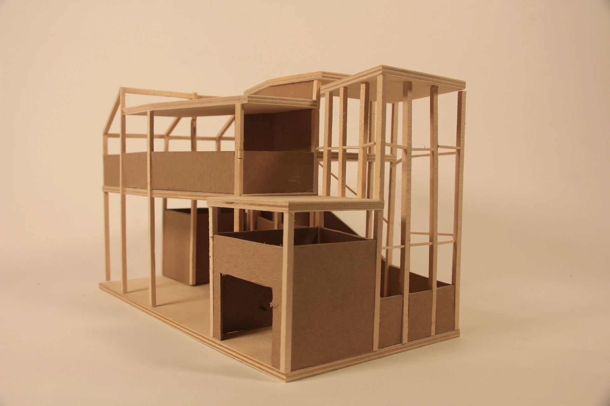
An archive and workspace for a mapmaker
Conceived for an urban archivist, this project develops a space for collecting, synthesizing, and interpreting maps. A thirty-by-fifty-foot grid establishes the initial order. Controlled deviations create hierarchy, organize public and private spaces, and give the archive a distinct spatial identity.
Academic project: Dawson Duffley. Studio coordinator: Tommy Yang. Instructor: Brad Groff. Teaching fellow: Julia Lako.
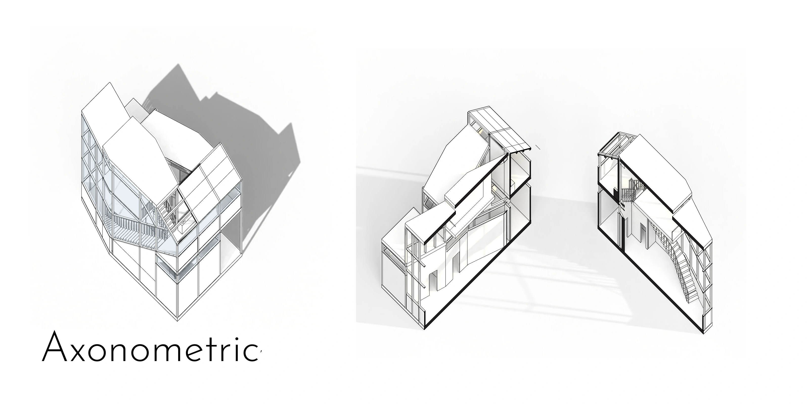
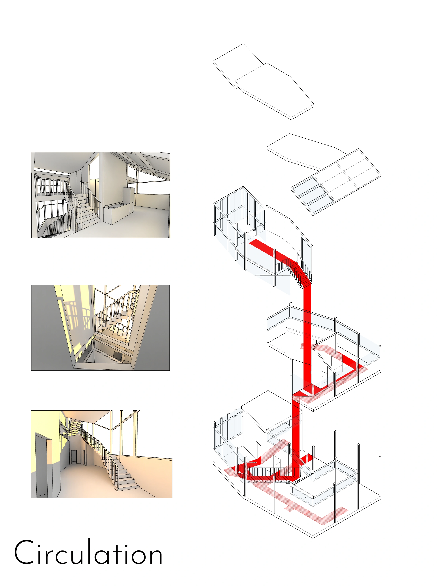
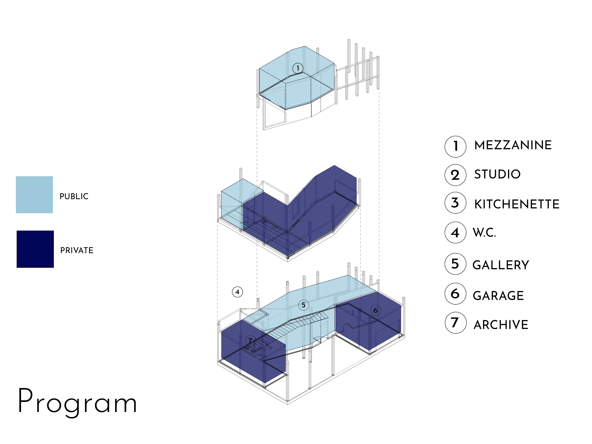
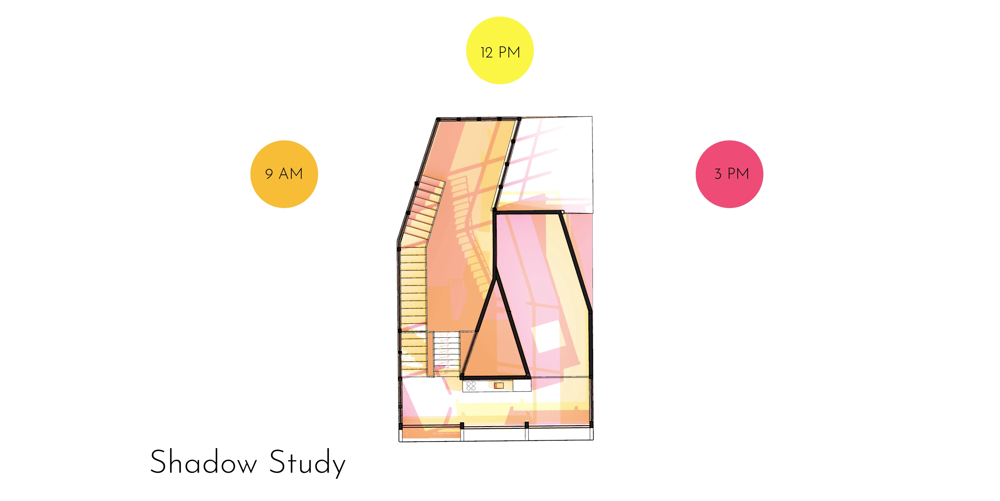
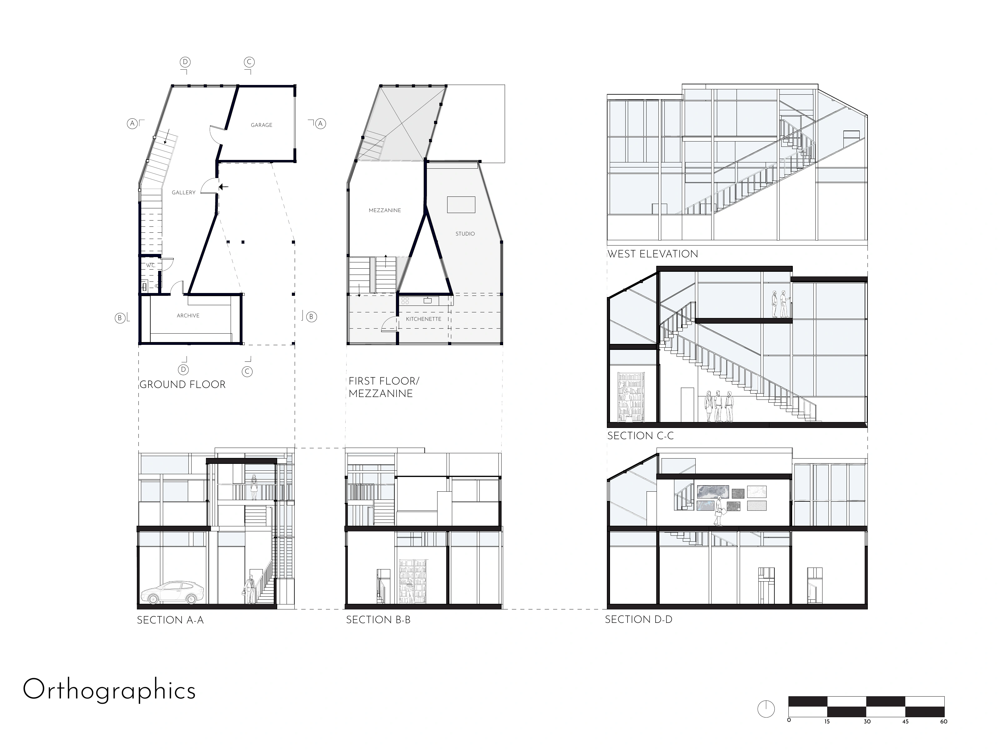
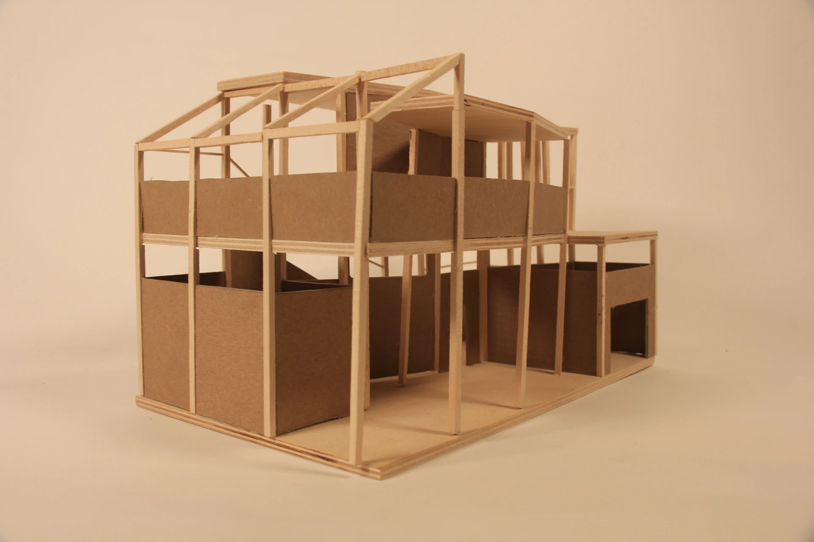
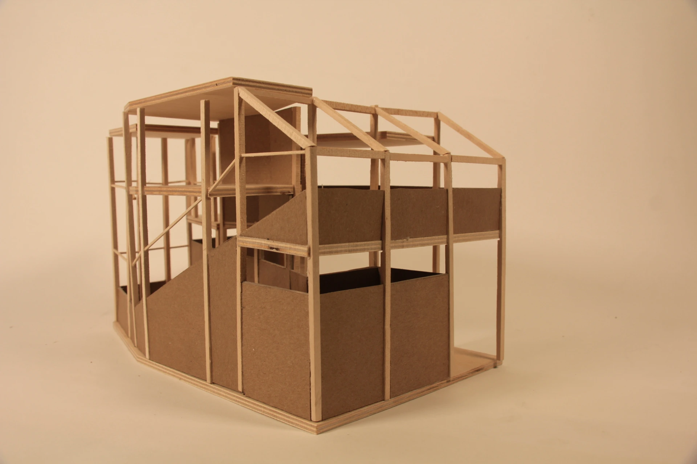
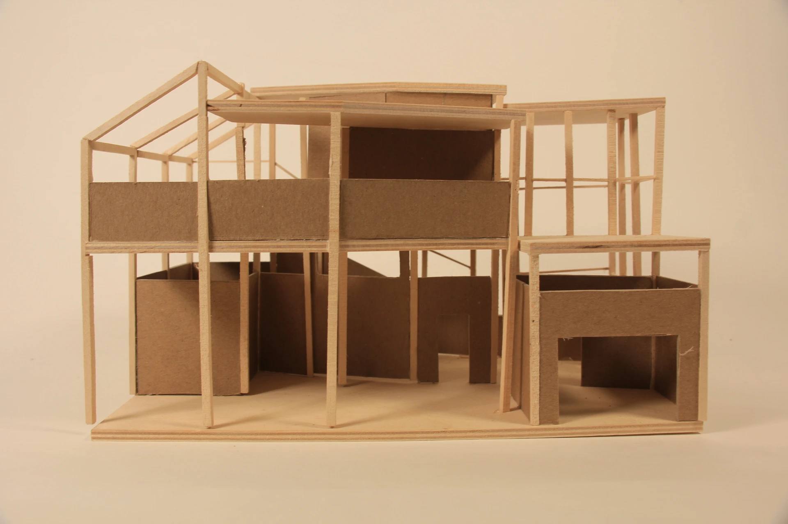
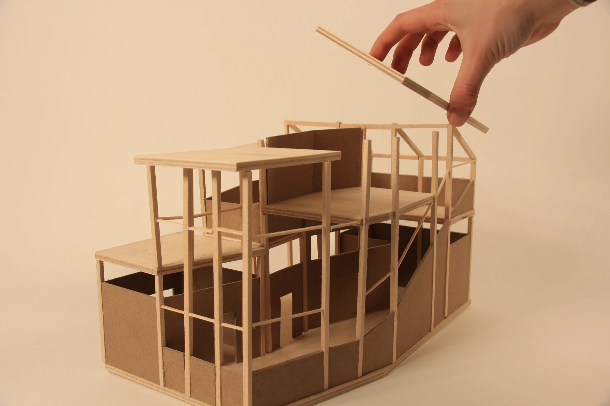
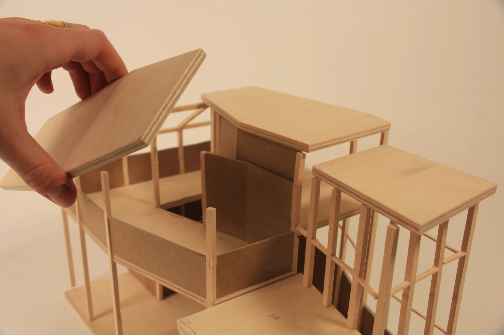